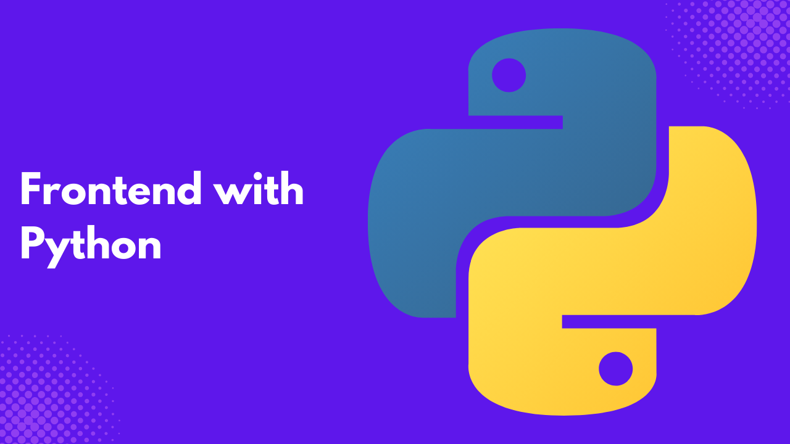

JavaScript has monopolized the field of front web development and has become what one will call the official language of the web. This is because it was built for that purpose.
But not everyone knows JavaScript. Does this mean that you can’t build a fully functional site? No.
As someone who started with Python programming, I wanted to build applications that users could interact with and see the visualization I have created. Thanks to these frameworks, I was able to achieve this.
In this article, you will learn the frameworks to use when you want to build a cool application by writing Python code.
This article is for Python developers who are not open to the steep learning curve of front-end development.
Reflex
Reflex, formerly Pinecone, is an open-source framework with batteries included. This means you can build a full-stack application and deploy it with Reflex.
The official Reflex documentation was built and deployed with Reflex. It’s easy to learn, and you don’t need web development knowledge to build apps.
With Reflex inbuilt ORM, you can connect to any SQL database and build components that wrap around React, a popular JavaScript framework.
Flet
Have you heard of Flutter? It’s a popular framework developed by Google. Flet is based on Flutter. It allows you to build interactive web, desktop, and mobile applications using Python programming.
Fleet flexibility allows you to add animations and authorization and build cross-platform applications.
Flet supports routing, and with Flet controls, you can build basic to complex user interfaces.
It’s easy to learn and start, like its parent framework, Flutter.
Check out the Flet gallery and see the awesome applications built with Flet.
Solara
Unlike Reflex, Solara is a library that allows you to build UI components for your application. You can have an application with a FastAPI, Django, or Flask backend and build the user interface with Solara.
Another interesting feature of Solara is the ability to use it inside the Jupyter Notebook. Solara can handle state management, routing, and building simple to complex UI components and hooks without leaving your comfort zone — Python.
However, Solara is a suitable choice if you are focused on building data applications.
Taipy
Does CSS scare you? Taipy allows you to build production-ready applications using Python without knowledge of web development. You can use Taipy either as Python Scripts or within Jupyter Notebooks.
Frontend, Backend, and Deployment are all at your fingertips. Imagine you want to build a web app with user authentication, session, and caching, and all you need is just.
$ pip install taipyAnvil
Try Anvil if you are more logical and find building user interfaces daunting.
Anvil allows you to build your application UI using a drag-and-drop designer, allowing you to handle the client and server-side interactivity with Python code.
You don’t need to worry about HTML or CSS; Anvil handles everything. It also has a built-in database on top of PostgreSQL to store your application information.
That’s not all. Anvil also supports hosting and deployment, version control with git, email sending and receiving, API consumption, and integration with third-party applications.
Congrats, you just got yourself a full-stack framework!
Trame
I suggest Trame as a go-to option if you need to create a dashboard heavily based on data.
It allows you to focus on your analysis while abstracting the complications of web development.
Trame is built on Vuetify, a UI component framework built on Vue.
Gradio
If you are a machine learning engineer who wants to demo your model, Gradio is your best bet. You can build a working application without design skills and interact with your model in real time.
Not everyone is technical or will understand your model metrics, but with Gradio, they can see the beautiful stuff you have built for humanity.
Shiny
This is my favorite because R programming was the first programming language I ever took seriously, even though I learned FORTRAN as an undergrad and BASIC during my secondary school days.
I am talking of R because Shiny was initially built in R, and the Shiny framework for Python was also recently developed.
Shiny focuses on the principle of reactivity by structuring the user interface and interactivity separately and allowing dynamic changes in the user interface either by the client or on the server side.
Shiny also supports routing and is a suitable choice for building data applications.
Unicorn
If you are a Django developer, your application has various ways of handling interactivity.
Some of these methods require leaving your comfort zone and learning one JavaScript framework or another.
With Unicorn, you can add interactions to your template and dynamically update your HTML DOM, all behind the scenes.
You don’t need to call your backend API endpoints in applications like React, Angular, or Vue.
PyScript
PyScript is a framework that allows you to build web apps directly in your browser. Like JavaScript, it manipulates your DOM and can run many popular Python packages.
With PyScript, you can create various UI components, such as buttons. It also integrates well with popular Python libraries like Pandas and Numpy.
ReactPy
I find it difficult for you to say you haven’t heard of React. It is so popular that some people think it’s a programming language — Just kidding.
ReactPy is a Python library that allows you to build user interfaces without having any knowledge of JavaScript while enjoying the benefits of React.
With this library, you wield the same power as React developers, who think they are the best thing to have happened since Slice Bread.
Dash
This framework is for you if you want to build data apps, especially on an enterprise level.
Dash integrates well with the graphing library Plotly and other Python data analytics libraries such as Pandas, Scikit-Learn, and Numpy.
Dash allows you to build dashboards with interactive visualizations.
Streamlit
Another Python open-source framework for building data applications is Streamlit. With zero or little knowledge of web development, you can get a full-stack website up and running.
Streamlit has a very active community with third-party modules that can give your application superpowers. If you want to learn Streamlit, check out my course, which covers some of the essentials to get you started. You can even check out a web app I built with Streamlit.
Panel
Panel, one of the libraries developed by HoloViz, allows data professionals to develop dashboards and complex web applications within the Python ecosystem.
Panel also allows you to build multipage applications, collaborate, and share your application with others. This library is for data professionals who frequently use Python.
NiceGUI
Built on FastAPI, with simplicity just like Streamlit, This Python library can be used to build web or GUI applications. NiceGUI offers great performance and ease of use.
NiceGUI is great, especially if you are into robotics projects and smart home solutions. Their documentation is simple and easy to use, so check it out if you want to get started.
PywebIO
If you want to build an MVP or have just started learning Python, PyWebIO is your best bet.
PyWebIO is a simple library that makes it easy to build a full-stack web application that can interact with databases and build AI applications.
It’s a low-code tool, and anyone familiar with basic Python can use it.
PyJs
PyJs is another Python library that can be used to build desktop or web applications.
It uses a Python-to-JavaScript compiler to compile Python to JavaScript and MSHTML for Windows applications.
Its AJAX library covers various types, allowing it to focus on application development.
Mesop
Used at Google, Mesop is another Python library for rapid application development.
No frontend knowledge, No HTML, JavaScript, or CSS. Just plain Python code to build a user interface of your choice.
You can use existing UI components on Mesop docs to build faster.
Mesop allows you to run small applications on Google Cloud for free.
Hyperdiv
If you want to build AI applications, you should try out Hyperdiv.
With your existing knowledge, you can build AI web applications rapidly.
It is easy to deploy and provides many tutorial articles to learn.
JustPY
JustPy is another Python web framework that creates web applications and GUIs with a few lines of code. You don’t need to know front-end development.
JustPy creates and combines components to form larger components or a web application. It integrates nicely with popular Python visualization libraries like matplotlib, plotly, and Highcharts.
JustPy handles both the front and back end, removing the need to decouple your web application. It uses Vue at the front and Starlette and Uvicorn at the back.
Conclusion
Does this mean we don’t need JavaScript? No!
JavaScript remains the king of the web, but sometimes, if you plan on building a simple user interface, these frameworks are your best bet.
Without web development experience, these libraries will save you a lot of stress.
Please let me know if you have any libraries not included on the list, and I will gladly add them.
Need Help with Data? Let’s Make It Simple.
At LearnData.xyz, we’re here to help you solve tough data challenges and make sense of your numbers. Whether you need custom data science solutions or hands-on training to upskill your team, we’ve got your back.
📧 Shoot us an email at admin@learndata.xyz—let’s chat about how we can help you make smarter decisions with your data.